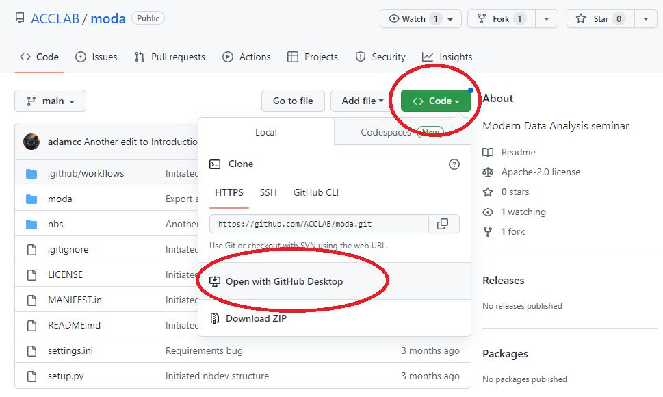

# Python is a general programming language.
# This website was generated with Python tools.
# This window is a tiny demonstration of how Python is integrated with the web.
from IPython.display import HTML
HTML("""
<iframe width="700" height="400" src="https://www.youtube.com/embed/kgicuytCkoY"
frameborder="0" allowfullscreen></iframe>
""")01. Introduction
As research techniques and data collection have become almost completely digital and analysis methods grow more sophisticated, it is critical that scientists develop three skills: data visualization, statistics, and coding. Unfortunately, many undergraduate biology programs emphasize the memorization of numerous facts, while failing to offer courses in data graphics, estimation statistics, or scientific programming. In this session, we offer a basic orientation on these topics.
Before class
If any issues can’t be resolved with the below steps, we can work on it in the class together.
Getting the necessary software
You’ll need to get set up with a version-control system. Go to GitHub and get an account. Download and install GitHub Desktop.
Retrieve the course materials from GitHub. Go to the course repository (“repo”) at https://github.com/ACCLAB/moda. Click the green Code button and then select Open with GitHub Desktop.
You will be prompted to select a directory for the local repository. If you are using a PC it can be something like this:
If you are using a mac, it can be something like//Users/YOURUSERNAME/Documents/GitHub/moda.To get set up with Python and Jupyter notebooks, install the Anaconda Distribution on your laptop.
Open Anaconda Navigator and open a terminal window by clicking on
Environments>base (root), and then clicking on the green triangle and selectOpen Terminal.
- Go to your moda directory (replace the path with your own actual path) and install it with pip:
cd Documents/GitHub/moda
pip install .
Checking out the notebooks
- launch JupyterLab by clicking on it.

JupyterLab will open in a browser tab.
In the File Browser panel in JupyterLab, navigate to the folder where you cloned the course repo (refer to step 2). Double click on ‘nbs’. You should see a list of notebook files. Open “02_Quick_tour_of_the_Notebook.ipynb” by double-clicking on the icon shown in the JupyterLab browser window.

Work through the notebook. Familiarize yourself with basic Python, and with working in the JupyterLab environment.
Reading about the python packages we will use
Read about pandas, matplotlib, and seaborn.
In class
Session Coding. Bring your laptop to class, and we will go through the examples in Data Analysis with Jupyter.
Lecture. Crash course on the history of and key issues in data visualization.
Short introduction to estimation and LLMs. Introduction to estimation statistics web app and python package.
Optional: Try JupyterLite, an experimental web version of JupyterLab, with a class notebook here.